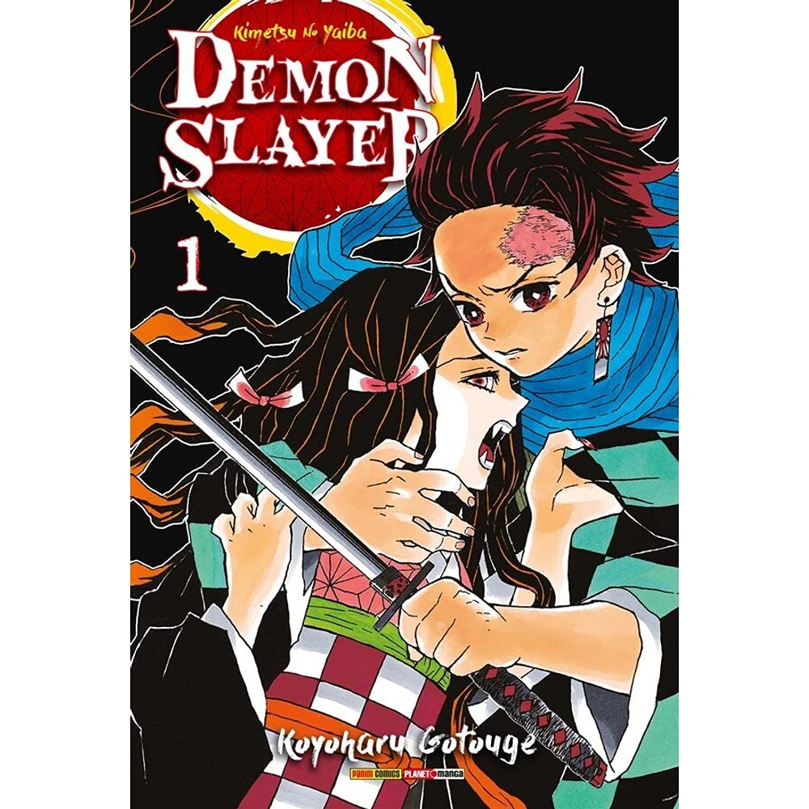
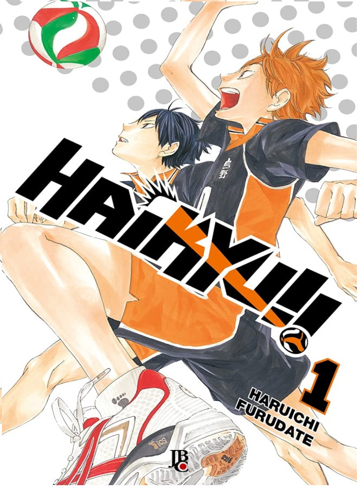
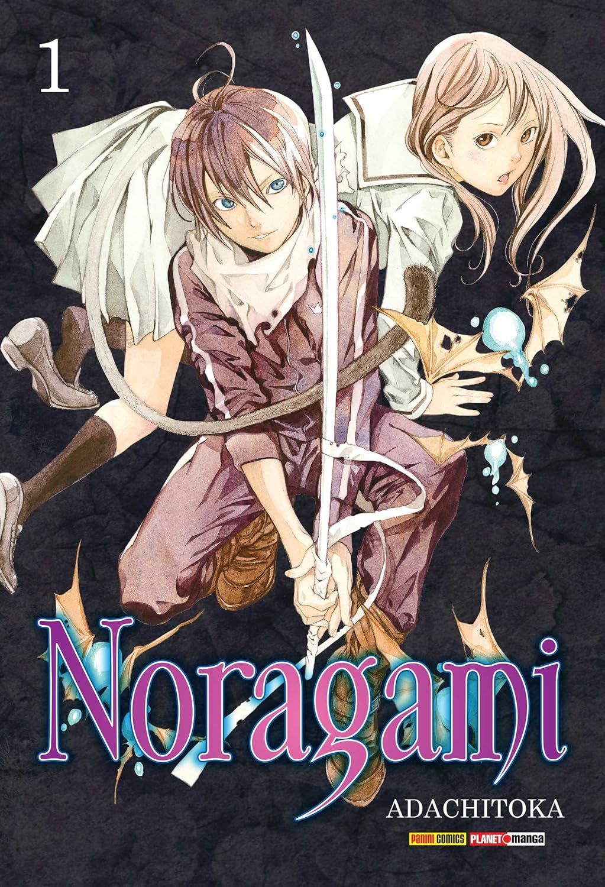
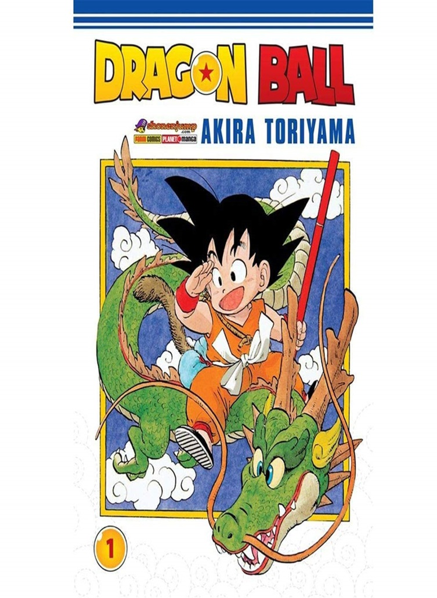

Explore o fascinante universo dos mangás, onde as narrativas ganham vida através de traços cativantes e enredos emocionantes.
De Naruto a One Piece, Dragon Ball a Attack on Titan, mergulhe em histórias que transcendem gêneros e cativam corações em todo o mundo

Jujutsu Kaisen: Batalha de Feiticeiros Vol. 1
Apesar do estudante colegial Yuuji Itadori ter grande força física, ele se inscreve no Clube de Ocultismo.
Certo dia, eles encontram um "objeto amaldiçoado" e retiram o selo, atraindo criaturas chamadas de "maldições".
Itadori corre em socorro de seus colegas, mas será que ele será capaz de abater essas criaturas usando apenas a força física?!
Na compra da primeira edição de Jujutsu ganhe de brinde um Poster Exclusivo
por Gege Akutami(autor, ilustrador)
R$9,99

Demon Slayer - Kimetsu No Yaiba Vol. 1
O dia-a-dia pacato de Tanjiro, um gentil garoto que vende carvão, se transforma radicalmente quando sua família é assassinada por um demônio.
A única sobrevivente é Nezuko, sua irmã mais nova. Porém, agora, ela se transformou em um Oni.
Diante dessa tragédia, os dois irmãos partem em uma jornada para derrotar o Oni que matou sua mãe e irmãozinhos.
E assim tem início uma aventura sanguinolenta de espadachins!
por Koyoharu Gotouge (Autor, Ilustrador)
R$9,99

Haikyu! Vol. 01
Shoyo Hinata e Tobio Kageyama, dois garotos fascinados pelo vôlei.
A diferença é que Kageyama é um levantador talentoso, e Hinata, um atacante de baixa estatura para um jogador.
Os dois se encontram durante a primeira rodada daetapa de classificação para o torneio Nacional, e acabam se tornando grande rivais.
Por coincidência do destino, eles terão que unir forças para entrar no clube de vôlei do colégio Karasuno e manter o sonho de continuar jogando vôlei.
por Haruichi Furudate (Autor)
R$14,99

Noragami Vol. 1
Conheça Yato, um rapaz de agasalho e sem-teto que se autodenomina um deus.
Apesar de sua personalidade um tanto quanto indelicada e temperamental, por uma pequena quantia ele se dispõe a realizar os desejos daqueles que estão com problemas,
fazendo o que sabe fazer de melhor: “cortar” qualquer coisa que habite este ou o outro mundo, assim como o limiar entre os dois!!
por Adachitoka (Autor)
R$9,99

One Piece - vol. 1
Luffy é um garoto que deseja tornar-se um pirata por causa do Shanks.
Durante uma discussão com Shanks por causa de alguns bandidos das montanhas, o garoto acaba comendo a Gomu Gomu no Mi.
Mais tarde, porém, os bandidos retornam e Luffy decide comprar briga com eles bem quando os piratas não estão lá para protegê-lo.
Shanks salva Luffy, mas acaba perdendo seu braço esquerdo por conta disso e logo deixa seu chapéu com o garoto.
por Eiichiro Oda (Autor)
R$19,99

Dragon Ball Vol. 1
Son Goku é um pequeno órfão de coração puro, mas com uma tremenda força.
Depois de viver tanto tempo isolado da civilização, ele recebe a inesperada visita de uma garota! Bulma lhe propõe uma parceria para buscar as sete Esferas do Dragão,
que, quando reunidas, são capazes de realizar qualquer desejo!
Perigos e adversários não faltarão no caminho dessa dupla inusitada, e os mais variados personagens marcarão presença nesta aventura cheia de humor!
por Akira Toriyama (Autor)
R$9,99